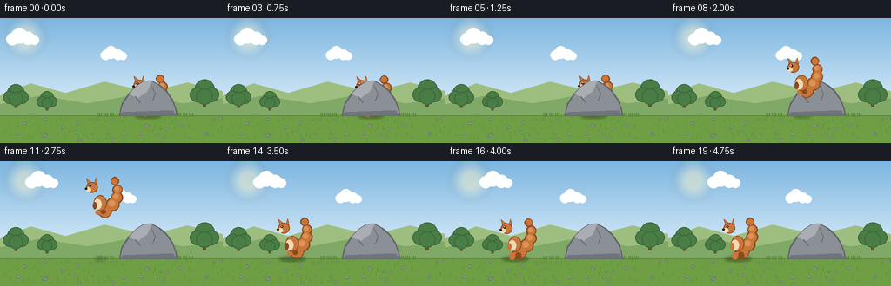
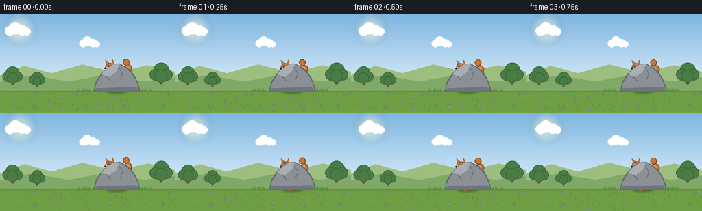
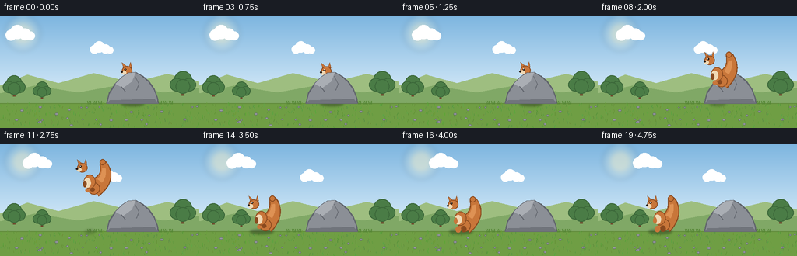
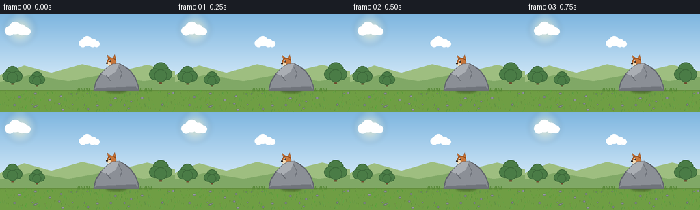
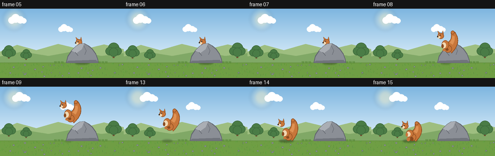
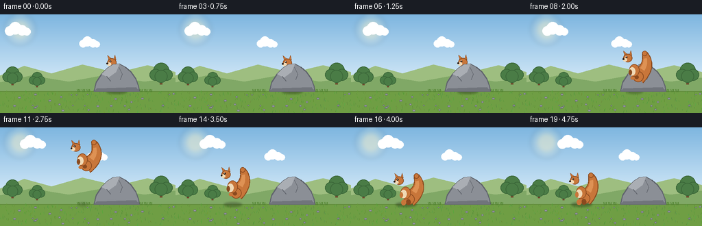

CODING AGENTS AS PIXEL WORLD MODELS
traex/Seed-2.1-Pro-0915 · dynamic_spatial_relationship_0023
点击播放 · 原生 RGB 像素
逐轮保存的候选
回放视频、检查图与代码变化。
每份候选均可单独播放。实际图片检查记录在下方工具轨迹中。
候选 01播放与检查图
点击播放 · 原生 RGB 像素


展开代码变化
--- 上一保存版本
+++ 本次保存版本
@@ -0,0 +1,259 @@
+"""Procedural text-to-video generator.
+
+Scene: a squirrel hides behind a rock (only head / ears peeking out),
+then leaps in an arc and lands standing to the left of the rock.
+Renders at 2x resolution and downsamples for smooth anti-aliased edges.
+"""
+from pathlib import Path
+import math
+
+import numpy as np
+from PIL import Image, ImageDraw, ImageFilter
+
+import artifact_io
+
+# ----------------------------------------------------------------------------
+# Constants
+# ----------------------------------------------------------------------------
+CASE_DIR = Path(__file__).parent
+W, H, N, FPS = 256, 144, 20, 4.0
+S = 2 # supersampling factor
+RW, RH = W * S, H * S # 512 x 288 render resolution
+GROUND_Y = int(RH * 0.78) # 224
+ROCK_CX = 340 # rock center in render pixels
+LEFT_X = 160 # squirrel landing spot (render pixels)
+
+SKY_TOP = (126, 182, 224)
+SKY_BOT = (223, 240, 251)
+FUR = (200, 118, 58)
+FUR_DARK = (138, 74, 31)
+CREAM = (240, 217, 181)
+ROCK_FILL = (139, 143, 150)
+ROCK_DARK = (96, 100, 108)
+ROCK_LIGHT = (170, 174, 180)
+
+rng = np.random.default_rng(20231110)
+
+
+# ----------------------------------------------------------------------------
+# Small drawing helpers
+# ----------------------------------------------------------------------------
+def ellipse(draw, cx, cy, rx, ry, fill, outline=None, width=1):
+ draw.ellipse([cx - rx, cy - ry, cx + rx, cy + ry], fill=fill,
+ outline=outline, width=width)
+
+
+def build_background():
+ """Static background: sky, sun, hills, trees, grassy ground."""
+ img = Image.new("RGB", (RW, RH))
+ dd = ImageDraw.Draw(img)
+
+ # Vertical sky gradient.
+ for y in range(GROUND_Y):
+ f = y / GROUND_Y
+ color = tuple(int(SKY_TOP[c] * (1 - f) + SKY_BOT[c] * f) for c in range(3))
+ dd.line([(0, y), (RW, y)], fill=color)
+
+ # Soft sun.
+ glow = Image.new("RGBA", (RW, RH), (0, 0, 0, 0))
+ gd = ImageDraw.Draw(glow)
+ for r, a in ((46, 26), (36, 40), (26, 120)):
+ gd.ellipse([58 - r, 44 - r, 58 + r, 44 + r], fill=(255, 244, 200, a))
+ glow = glow.filter(ImageFilter.GaussianBlur(6))
+ img.paste(Image.alpha_composite(img.convert("RGBA"), glow).convert("RGB"), (0, 0))
+ dd = ImageDraw.Draw(img)
+
+ # Layered rolling hills.
+ dd.polygon([(0, GROUND_Y), (0, 178), (70, 150), (150, 172), (240, 146),
+ (340, 170), (430, 148), (RW, 168), (RW, GROUND_Y)],
+ fill=(158, 190, 128))
+ dd.polygon([(0, GROUND_Y), (0, 198), (90, 178), (200, 196), (310, 176),
+ (420, 196), (RW, 184), (RW, GROUND_Y)],
+ fill=(128, 168, 102))
+
+ # Background trees (trunk + layered canopy).
+ for tx, ty, s in ((36, 206, 1.0), (470, 204, 1.15), (108, 212, 0.8)):
+ dd.rectangle([tx - 3 * s, ty - 26 * s, tx + 3 * s, ty], fill=(110, 78, 48))
+ for ox, oy, r in ((0, -34, 20), (-14, -24, 15), (14, -24, 15), (0, -20, 16)):
+ ellipse(dd, tx + ox * s, ty + oy * s, r * s, r * s,
+ fill=(74, 124, 70), outline=(58, 102, 56), width=2)
+
+ # Ground.
+ dd.rectangle([0, GROUND_Y, RW, RH], fill=(111, 158, 68))
+ dd.line([(0, GROUND_Y), (RW, GROUND_Y)], fill=(96, 138, 58), width=2)
+
+ # Grass texture: scattered blades and small pebbles.
+ for _ in range(260):
+ x = int(rng.integers(0, RW))
+ y = int(rng.integers(GROUND_Y + 4, RH))
+ h = int(rng.integers(3, 9))
+ shade = (int(rng.integers(70, 110)), int(rng.integers(130, 175)),
+ int(rng.integers(45, 75)))
+ dd.line([(x, y), (x + int(rng.integers(-2, 3)), y - h)], fill=shade)
+ for _ in range(28):
+ x = int(rng.integers(0, RW))
+ y = int(rng.integers(GROUND_Y + 8, RH - 4))
+ r = int(rng.integers(2, 5))
+ ellipse(dd, x, y, r, r * 0.7, fill=(146, 150, 154), outline=ROCK_DARK)
+
+ # Grass tufts near the rock for grounding.
+ for tx in range(ROCK_CX - 110, ROCK_CX + 112, 14):
+ if abs(tx - ROCK_CX) < 70:
+ continue
+ y = GROUND_Y + 2
+ for k in range(3):
+ dd.line([(tx + k * 3 - 3, y), (tx + k * 3 - 5 + k, y - 8)],
+ fill=(84, 134, 52), width=2)
+ return img
+
+
+BACKGROUND = build_background()
+
+
+def draw_cloud(img, cx, cy, scale=1.0):
+ dd = ImageDraw.Draw(img)
+ for ox, oy, r in ((-22, 2, 14), (-6, -6, 18), (14, 0, 15), (28, 4, 11)):
+ ellipse(dd, cx + ox * scale, cy + oy * scale, r * scale, r * scale,
+ fill=(255, 255, 255))
+
+
+def draw_rock(img):
+ """Static jagged rock sitting on the ground."""
+ dd = ImageDraw.Draw(img)
+ rel = [(-66, 0), (-60, -26), (-44, -50), (-26, -68), (-10, -78),
+ (8, -80), (26, -70), (42, -56), (56, -36), (64, -14), (66, 0)]
+ pts = [(ROCK_CX + x, GROUND_Y + y) for x, y in rel]
+ dd.polygon(pts, fill=ROCK_FILL, outline=ROCK_DARK)
+ dd.line(pts + [pts[0]], fill=ROCK_DARK, width=3)
+
+ # Sunlit upper-left facet.
+ facet = [(ROCK_CX - 44, GROUND_Y - 50), (ROCK_CX - 26, GROUND_Y - 68),
+ (ROCK_CX - 10, GROUND_Y - 78), (ROCK_CX + 8, GROUND_Y - 80),
+ (ROCK_CX - 2, GROUND_Y - 56), (ROCK_CX - 24, GROUND_Y - 40)]
+ dd.polygon(facet, fill=ROCK_LIGHT)
+
+ # Shadowed base and a couple of cracks.
+ dd.polygon([(ROCK_CX - 66, GROUND_Y), (ROCK_CX + 66, GROUND_Y),
+ (ROCK_CX + 56, GROUND_Y - 12), (ROCK_CX - 58, GROUND_Y - 8)],
+ fill=(112, 116, 123))
+ dd.line([(ROCK_CX + 6, GROUND_Y - 70), (ROCK_CX + 16, GROUND_Y - 50),
+ (ROCK_CX + 10, GROUND_Y - 34)], fill=ROCK_DARK, width=2)
+ dd.line([(ROCK_CX - 30, GROUND_Y - 44), (ROCK_CX - 18, GROUND_Y - 30)],
+ fill=ROCK_DARK, width=2)
+
+
+def draw_squirrel(img, cx, feet_y, airborne=False, squash=1.0, tail_sway=0.0):
+ """Cartoon squirrel facing left. (cx, feet_y) is the ground-contact point."""
+ dd = ImageDraw.Draw(img)
+ sy = squash
+ cy = lambda ly: feet_y + ly * sy # compressed vertical offset
+
+ # Bushy tail: overlapping circles along a swaying quadratic curve.
+ p0 = np.array([cx + 10.0, cy(-16)])
+ ctrl = np.array([cx + 46.0 + tail_sway * 10.0, cy(-48) + tail_sway * 6])
+ p1 = np.array([cx + 28.0 + tail_sway * 6.0, cy(-84)])
+ radii = [14, 13, 11, 9, 7]
+ tail_pts = []
+ for j in range(5):
+ q = j / 4.0
+ pt = (1 - q) ** 2 * p0 + 2 * (1 - q) * q * ctrl + q ** 2 * p1
+ tail_pts.append((pt[0], pt[1], radii[j]))
+ for x, y, r in tail_pts: # dark outline pass
+ ellipse(dd, x, y, r + 2.5, r + 2.5, fill=FUR_DARK)
+ for x, y, r in tail_pts: # main fur
+ ellipse(dd, x, y, r, r, fill=FUR)
+ for x, y, r in tail_pts[1:4]: # warm highlight
+ ellipse(dd, x - 2, y - 2, r * 0.55, r * 0.55, fill=(222, 146, 84))
+
+ # Back legs.
+ if airborne:
+ ellipse(dd, cx + 6, cy(-14), 6, 5, fill=FUR_DARK)
+ ellipse(dd, cx - 6, cy(-12), 6, 5, fill=FUR)
+ else:
+ ellipse(dd, cx + 7, cy(-7), 7, 8, fill=FUR_DARK)
+ ellipse(dd, cx - 7, cy(-6), 7, 8, fill=FUR)
+
+ # Body and cream belly.
+ ellipse(dd, cx - 1, cy(-34), 15, 18 * sy, fill=FUR, outline=FUR_DARK, width=2)
+ ellipse(dd, cx - 7, cy(-31), 9, 12 * sy, fill=CREAM)
+
+ # Front arm.
+ ellipse(dd, cx - 13, cy(-28), 4.5, 8, fill=FUR_DARK if airborne else FUR)
+
+ # Head with ears.
+ hx, hy = cx - 20, cy(-70)
+ dd.polygon([(hx - 9, hy - 7), (hx - 13, hy - 21), (hx - 2, hy - 12)],
+ fill=FUR, outline=FUR_DARK)
+ dd.polygon([(hx + 5, hy - 10), (hx + 9, hy - 22), (hx + 12, hy - 8)],
+ fill=FUR, outline=FUR_DARK)
+ ellipse(dd, hx, hy, 13, 12, fill=FUR, outline=FUR_DARK, width=2)
+ # Muzzle, nose, eye, glint.
+ ellipse(dd, hx - 8, hy + 5, 6, 5, fill=CREAM)
+ ellipse(dd, hx - 13, hy + 3, 2.4, 2.0, fill=(40, 28, 22))
+ ellipse(dd, hx - 4, hy - 3, 2.6, 2.6, fill=(35, 26, 20))
+ ellipse(dd, hx - 5, hy - 4, 1.0, 1.0, fill=(255, 255, 255))
+
+
+def draw_shadow(img, x, height):
+ """Soft contact shadow that shrinks and fades as the squirrel rises."""
+ layer = Image.new("RGBA", (RW, RH), (0, 0, 0, 0))
+ ld = ImageDraw.Draw(layer)
+ spread = max(0.45, 1.0 - height / 130.0)
+ alpha = int(110 * spread)
+ ld.ellipse([x - 30 * spread, GROUND_Y - 5, x + 30 * spread, GROUND_Y + 7],
+ fill=(40, 50, 30, alpha))
+ layer = layer.filter(ImageFilter.GaussianBlur(3))
+ img.paste(Image.alpha_composite(img.convert("RGBA"), layer).convert("RGB"), (0, 0))
+
+
+# ----------------------------------------------------------------------------
+# Animation state machine
+# ----------------------------------------------------------------------------
+def render_frame(i):
+ img = BACKGROUND.copy()
+ draw_cloud(img, (90 + i * 4) % (RW + 80) - 40, 46, 1.0)
+ draw_cloud(img, (300 + i * 2) % (RW + 80) - 40, 84, 0.8)
+ t = i / (N - 1)
+
+ if i <= 7:
+ # Hidden behind the rock: idle bob, rock painted over the squirrel.
+ bob = math.sin(t * math.tau * 2) * 2
+ sway = math.sin(t * math.tau * 2) * 0.5
+ draw_shadow(img, ROCK_CX, 0)
+ draw_squirrel(img, ROCK_CX, GROUND_Y + bob, tail_sway=sway)
+ draw_rock(img)
+
+ elif i <= 14:
+ # Airborne arc from behind the rock toward the landing spot.
+ u = (i - 7.2) / 6.6
+ u = min(max(u, 0.0), 1.0)
+ x = ROCK_CX - 12 + (LEFT_X - (ROCK_CX - 12)) * u
+ height = 96 * 4 * u * (1 - u) # parabolic arc, render pixels
+ feet_y = GROUND_Y - height
+ draw_shadow(img, x, height)
+ draw_rock(img)
+ draw_squirrel(img, x, feet_y, airborne=True,
+ tail_sway=math.sin(u * math.pi) * 0.8)
+
+ else:
+ # Landed to the left of the rock.
+ land = (i - 15) / 4.0
+ squash = 0.86 if i == 15 else 1.0
+ bob = math.sin(land * math.tau) * 1.5
+ sway = math.sin(land * math.tau) * 0.5
+ draw_shadow(img, LEFT_X, 0)
+ draw_rock(img)
+ draw_squirrel(img, LEFT_X, GROUND_Y + bob, squash=squash, tail_sway=sway)
+
+ return img.resize((W, H), Image.Resampling.LANCZOS)
+
+
+def main():
+ frames = np.stack([np.asarray(render_frame(i)) for i in range(N)]).astype(np.uint8)
+ assert frames.shape == (N, H, W, 3), frames.shape
+ artifact_io.save(frames, CASE_DIR)
+ print(f"Saved {N} frames {W}x{H} at {FPS} fps to {CASE_DIR}")
+
+
+if __name__ == "__main__":
+ main()
候选 02播放与检查图
点击播放 · 原生 RGB 像素


展开代码变化
--- 上一保存版本
+++ 本次保存版本
@@ -142,46 +142,9 @@
fill=ROCK_DARK, width=2)
-def draw_squirrel(img, cx, feet_y, airborne=False, squash=1.0, tail_sway=0.0):
- """Cartoon squirrel facing left. (cx, feet_y) is the ground-contact point."""
- dd = ImageDraw.Draw(img)
- sy = squash
- cy = lambda ly: feet_y + ly * sy # compressed vertical offset
-
- # Bushy tail: overlapping circles along a swaying quadratic curve.
- p0 = np.array([cx + 10.0, cy(-16)])
- ctrl = np.array([cx + 46.0 + tail_sway * 10.0, cy(-48) + tail_sway * 6])
- p1 = np.array([cx + 28.0 + tail_sway * 6.0, cy(-84)])
- radii = [14, 13, 11, 9, 7]
- tail_pts = []
- for j in range(5):
- q = j / 4.0
- pt = (1 - q) ** 2 * p0 + 2 * (1 - q) * q * ctrl + q ** 2 * p1
- tail_pts.append((pt[0], pt[1], radii[j]))
- for x, y, r in tail_pts: # dark outline pass
- ellipse(dd, x, y, r + 2.5, r + 2.5, fill=FUR_DARK)
- for x, y, r in tail_pts: # main fur
- ellipse(dd, x, y, r, r, fill=FUR)
- for x, y, r in tail_pts[1:4]: # warm highlight
- ellipse(dd, x - 2, y - 2, r * 0.55, r * 0.55, fill=(222, 146, 84))
-
- # Back legs.
- if airborne:
- ellipse(dd, cx + 6, cy(-14), 6, 5, fill=FUR_DARK)
- ellipse(dd, cx - 6, cy(-12), 6, 5, fill=FUR)
- else:
- ellipse(dd, cx + 7, cy(-7), 7, 8, fill=FUR_DARK)
- ellipse(dd, cx - 7, cy(-6), 7, 8, fill=FUR)
-
- # Body and cream belly.
- ellipse(dd, cx - 1, cy(-34), 15, 18 * sy, fill=FUR, outline=FUR_DARK, width=2)
- ellipse(dd, cx - 7, cy(-31), 9, 12 * sy, fill=CREAM)
-
- # Front arm.
- ellipse(dd, cx - 13, cy(-28), 4.5, 8, fill=FUR_DARK if airborne else FUR)
-
- # Head with ears.
- hx, hy = cx - 20, cy(-70)
+def draw_head(dd, hx, hy):
+ """Squirrel head (facing left), anchored at head center."""
+ # Ears.
dd.polygon([(hx - 9, hy - 7), (hx - 13, hy - 21), (hx - 2, hy - 12)],
fill=FUR, outline=FUR_DARK)
dd.polygon([(hx + 5, hy - 10), (hx + 9, hy - 22), (hx + 12, hy - 8)],
@@ -194,6 +157,73 @@
ellipse(dd, hx - 5, hy - 4, 1.0, 1.0, fill=(255, 255, 255))
+def _bezier_ribbon(p0, ctrl, p1, widths, outline_extra=0.0):
+ """Polygon outline of a variable-width quadratic Bezier ribbon."""
+ q = np.linspace(0, 1, len(widths))
+ pts = (1 - q)[:, None] ** 2 * p0 + 2 * (1 - q)[:, None] * q[:, None] * ctrl \
+ + q[:, None] ** 2 * p1
+ der = 2 * (1 - q)[:, None] * (ctrl - p0) + 2 * q[:, None] * (p1 - ctrl)
+ normals = np.column_stack([-der[:, 1], der[:, 0]])
+ normals /= (np.linalg.norm(normals, axis=1, keepdims=True) + 1e-9)
+ w = widths + outline_extra
+ left = pts + normals * w[:, None]
+ right = pts - normals * w[:, None]
+ polygon = np.vstack([left, right[::-1]])
+ return [tuple(map(float, p)) for p in polygon], pts, normals, w
+
+
+def draw_squirrel(img, cx, feet_y, airborne=False, squash=1.0, tail_sway=0.0):
+ """Cartoon squirrel facing left. (cx, feet_y) is the ground-contact point."""
+ dd = ImageDraw.Draw(img)
+ sy = squash
+ cy = lambda ly: feet_y + ly * sy # compressed vertical offset
+
+ # Bushy tail: one smooth, tapering curved ribbon.
+ p0 = np.array([cx + 10.0, cy(-16)])
+ ctrl = np.array([cx + 46.0 + tail_sway * 10.0, cy(-48) + tail_sway * 6])
+ p1 = np.array([cx + 28.0 + tail_sway * 6.0, cy(-84)])
+ q = np.linspace(0, 1, 22)
+ widths = 15.0 * (1 - q) ** 0.8 + 6.0
+ outline_poly, _, _, _ = _bezier_ribbon(p0, ctrl, p1, widths, outline_extra=2.5)
+ dd.polygon(outline_poly, fill=FUR_DARK)
+ body_poly, pts, normals, w = _bezier_ribbon(p0, ctrl, p1, widths)
+ dd.polygon(body_poly, fill=FUR)
+ # Warm inner highlight along the upper side of the tail.
+ hi = pts[6:18] - normals[6:18] * (w[6:18] * 0.35)[:, None]
+ hi_w = w[6:18] * 0.42
+ hi_left = hi + normals[6:18] * hi_w[:, None]
+ hi_right = hi - normals[6:18] * hi_w[:, None]
+ dd.polygon([tuple(map(float, p)) for p in np.vstack([hi_left, hi_right[::-1]])],
+ fill=(222, 146, 84))
+ # Rounded base and tip fluff.
+ ellipse(dd, p0[0], p0[1], 15.5, 15.5, fill=FUR, outline=FUR_DARK, width=2)
+ ellipse(dd, p1[0], p1[1], 7.5, 7.5, fill=FUR, outline=FUR_DARK, width=2)
+
+ # Back legs.
+ if airborne:
+ ellipse(dd, cx + 6, cy(-14), 6, 5, fill=FUR_DARK)
+ ellipse(dd, cx - 6, cy(-12), 6, 5, fill=FUR)
+ else:
+ ellipse(dd, cx + 7, cy(-7), 7, 8, fill=FUR_DARK)
+ ellipse(dd, cx - 7, cy(-6), 7, 8, fill=FUR)
+
+ # Body and cream belly.
+ ellipse(dd, cx - 1, cy(-34), 15, 18 * sy, fill=FUR, outline=FUR_DARK, width=2)
+ ellipse(dd, cx - 7, cy(-31), 9, 12 * sy, fill=CREAM)
+
+ # Front arm.
+ ellipse(dd, cx - 13, cy(-28), 4.5, 8, fill=FUR_DARK if airborne else FUR)
+
+ # Head.
+ draw_head(dd, cx - 20, cy(-70))
+
+
+def draw_peeking_head(img, bob):
+ """Only head and ears show above the rock crest."""
+ dd = ImageDraw.Draw(img)
+ draw_head(dd, ROCK_CX - 14, GROUND_Y - 84 + bob)
+
+
def draw_shadow(img, x, height):
"""Soft contact shadow that shrinks and fades as the squirrel rises."""
layer = Image.new("RGBA", (RW, RH), (0, 0, 0, 0))
@@ -216,11 +246,10 @@
t = i / (N - 1)
if i <= 7:
- # Hidden behind the rock: idle bob, rock painted over the squirrel.
+ # Hidden behind the rock: only head and ears peek over the crest.
bob = math.sin(t * math.tau * 2) * 2
- sway = math.sin(t * math.tau * 2) * 0.5
draw_shadow(img, ROCK_CX, 0)
- draw_squirrel(img, ROCK_CX, GROUND_Y + bob, tail_sway=sway)
+ draw_peeking_head(img, bob)
draw_rock(img)
elif i <= 14:
候选 03播放与检查图
点击播放 · 原生 RGB 像素

展开代码变化
--- 上一保存版本
+++ 本次保存版本
@@ -254,7 +254,7 @@
elif i <= 14:
# Airborne arc from behind the rock toward the landing spot.
- u = (i - 7.2) / 6.6
+ u = (i - 7.5) / 6.8
u = min(max(u, 0.0), 1.0)
x = ROCK_CX - 12 + (LEFT_X - (ROCK_CX - 12)) * u
height = 96 * 4 * u * (1 - u) # parabolic arc, render pixels
候选 04播放与检查图
点击播放 · 原生 RGB 像素

展开代码变化
代码未变化；重新保存了产物。
可观测工具轨迹
实际执行的命令与返回图片。
命令 1exit 0
/bin/bash -lc 'cat prompt.txt GENERATION_RULES.md task_spec.json'
命令 2exit 0
/bin/bash -lc "ls -la; find . -maxdepth 3 -name 'artifact_io*' -o -maxdepth 3 -name '*.py' | head -50"
命令 3exit 0
/bin/bash -lc 'cat artifact_io.py'
命令 4exit 0
/bin/bash -lc 'cd "$(pwd)" && python generate.py'
命令 5exit 0
/bin/bash -lc 'python generate.py'
命令 6exit 0
/bin/bash -lc "python - <<'EOF'
from PIL import Image, ImageDraw
import numpy as np
ids = [5,6,7,8,9,13,14,15]
w,h=256,144
sheet = Image.new(\"RGB\",(w*4,(h+18)*2),(20,20,20))
d = ImageDraw.Draw(sheet)
for k,i in enumerate(ids):
f = Image.open(f\"frames/{i:02d}.png\")
x,y=(k%4)*w,(k//4)*(h+18)
d.text((x+4,y+3),f\"frame {i:02d}\",fill=\"white\")
sheet.paste(f,(x,y+18))
sheet.save(\".tmp/transition.png\")
print(\"ok\")
EOF"命令 7exit 0
/bin/bash -lc "python generate.py && ls -la && python - <<'EOF' import numpy as np d = np.load(\"pixels.npz\") p = d[\"pixels\"] print(\"tensor:\", p.shape, p.dtype) frames = np.transpose(p, (2,0,1)) rgb = np.stack([(frames >> 16)&255, (frames >> 8)&255, frames&255], -1).astype(np.uint8) print(\"frames:\", rgb.shape, rgb.dtype, \"unique colors:\", len(np.unique(rgb.reshape(-1,3), axis=0))) EOF"
视觉工具实际返回图片 1

视觉工具实际返回图片 2

视觉工具实际返回图片 3

视觉工具实际返回图片 4

保存候选 4 份；完成命令 7 次；可验证图片返回 4 张。原始 API 响应与完整日志保留在本地。